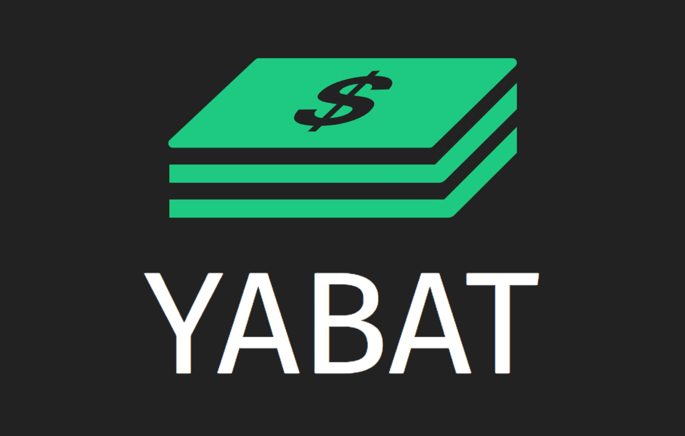

Mijn projecten
YABAT

YABAT is een web applicatie die het makkelijk maakt een logboek van inkomsten en uitgaven bij te houden. Je kan ook maandelijkse uitgaven en inkomsten vergelijken opgedeeld per categorie.
Voor meer info, bekijk op Github ->YABAT is een web applicatie die het makkelijk maakt een logboek van inkomsten en uitgaven bij te houden. Je kan ook maandelijkse uitgaven en inkomsten vergelijken opgedeeld per categorie.
Voor meer info, bekijk op Github ->